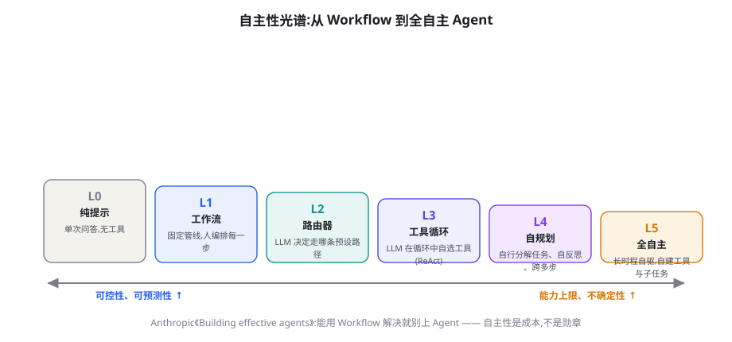
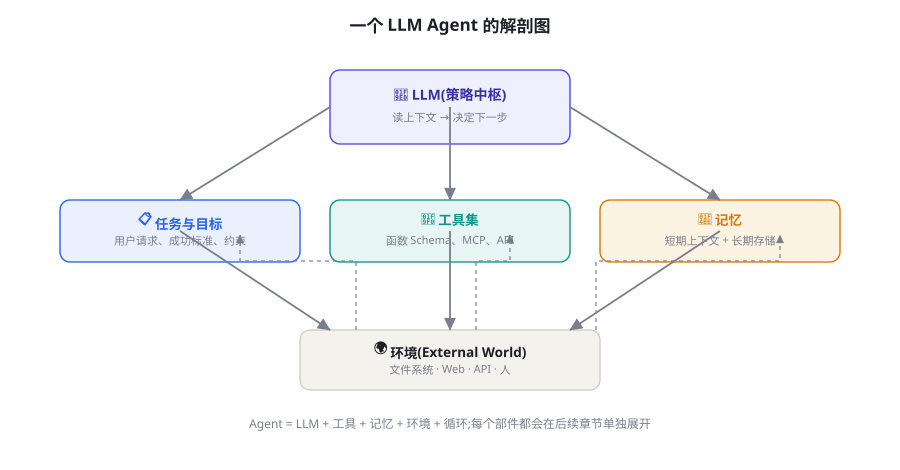
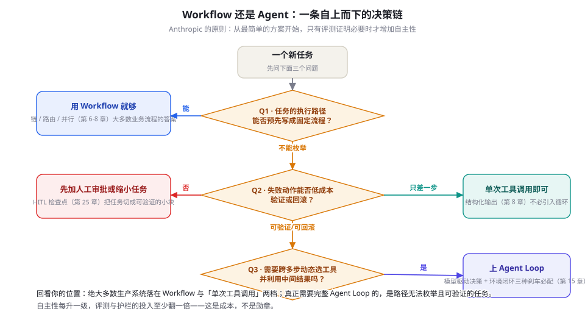

什么是 Agent：自主性光谱与感知-决策-行动
「Agent」这个词被用得太滥，需要一个工程定义。本章给出全书的核心概念框架：Anthropic 对 Workflow 与 Agent 的区分、感知-决策-行动的经典解剖、L0 到 L5 的自主性分级判据，以及「什么时候才真的需要 Agent」的决策树。读完它，你不仅能验货市面上的「Agent」产品，还能决定自己的系统该造在哪一级。
Anthropic 的定义：Workflow 与 Agent 是两回事
2024 年底，Anthropic 在《Building Effective Agents》里做了一个后来被业界广泛引用的区分，本书也直接采用它作为工作定义：Workflow（工作流）是开发者预先编排好 LLM 与工具的调用路径的系统；Agent 是 LLM 自己动态决定过程与工具用法、并掌握任务完成方式的系统。两者的分水岭只有一个问题：「下一步做什么」由谁决定——由代码决定，是 Workflow；由模型决定，才是 Agent。
这个区分立刻能解释你见过的绝大多数争论。有人演示「我们的 Agent 客服」，流程图上每个箭头都是产品经理画的——那是 Workflow，模型只在每个节点里负责组织语言；有人抱怨「Agent 不稳定、烧钱、不可控」，八成是因为把本该用 Workflow 解决的任务强塞给了 Agent。两种抱怨都错怪了技术：前者错在包装，后者错在选型。这不是价值排序：Workflow 更可控、更便宜、更好调试，Anthropic 自己的建议就是「能用 Workflow 解决就别上 Agent」——大部分生产系统应当是 Workflow，这句话值得读两遍。
那篇文章同样有价值的地方，是它把 Workflow 这一半也讲透了：大多数「Agent 需求」其实是五种 Workflow 模式之一，每种都有明确的适用条件——
| Workflow 模式 | 机制 | 适用条件 | 本书位置 |
|---|---|---|---|
| 提示链（Prompt Chaining） | 任务拆成串行步骤，每步一个 LLM 调用 | 步骤固定、可顺序分解 | 第 7 章 |
| 路由（Routing） | 先分类，再走对应的专用分支 | 输入有明显类型、分支各自优化更好 | 第 6-7 章 |
| 并行化（Parallelization） | 多个调用同时跑，结果汇总或互审 | 子任务独立、或需要多视角把关 | 第 7、22 章 |
| 编排者-执行者（Orchestrator-Workers） | 一个 LLM 动态拆分任务，分给执行者再综合 | 子任务无法预先枚举，但仍由中心调度 | 第 24 章 |
| 评估者-优化者（Evaluator-Optimizer） | 一个 LLM 生成、另一个评审打回，循环到达标 | 有清晰的评判标准 | 第 22 章 |
五种模式的前三种完全确定、后两种开始有「动态分配」的成分——这个梯度恰好说明：Workflow 与 Agent 之间不是悬崖，而是决策权逐步移交的斜坡。工程上读表的方法：先尝试用前三种模式拼出方案；拼不出来（子任务真的无法预先枚举）才考虑后两种；后两种还不够，才进入下一节的 L3。
它与本书前文的脉络严格衔接。第 3 章表 3-1 给出的 Agent 四判据——模型驱动决策、环境闭环、工具使用、任务级自主——正是这个区分的操作化版本：四条全满足是严格意义的 Agent（对应光谱高端），满足两三条是「半自主系统」（光谱中段），一条都不满足就是普通自动化；而第 1 章那段演示代码让你见过的「模型决定要不要调搜索、代码负责执行并把结果喂回去」，就是「模型驱动决策 + 环境闭环」两条判据在代码里的样子。第 14 章要做的，是把这套判据拉成一条完整的光谱，并给每一级配上判据与实例。
评估任何需求时，第一个问题不是「要不要用 Agent」，而是「这个任务的执行路径能否预先写成固定流程」。能——老实用 Workflow，把模型当流程里的智能节点用；不能——才谈自主性。反过来验货别人的「Agent」：让销售描述一个没预料到的输入，看系统的行为是查流程文档还是当场自由发挥。
感知-决策-行动：七十年定义的当代翻译
「Agent」并非 LLM 时代的发明。Russell 与 Norvig 的教科书给过一个覆盖面极广的定义：Agent 是任何能通过传感器感知环境、并通过执行器作用于环境的东西；而「理性 Agent」在选择动作时，会最大化对性能度量的期望收益。这个定义的厉害之处在于把「智能」从实现方式里剥离——恒温器、扫地机器人、AlphaGo、人类都是光谱上的点，判别标准只有感知与行动。Wooldridge 与 Jennings 在 1995 年对「智能 Agent」的经典刻画补上了社会性维度：自主性（无人直接干预而运行）、反应性（感知环境并及时响应）、主动性（主动采取行动达成目标）、社交能力（与其他 Agent 或人交互）。这四条在今天的 LLM Agent 身上仍能一一对上——它们刻画的是 Agent 的「本性」，LLM 改变的只是实现「决策」这一环的方式。
把这套经典语言翻译到 LLM Agent，每个部件都有精确的对应物，这张对照表是理解后续所有章节的地图：
| 经典概念 | LLM Agent 中的形态 | 本书章节 |
|---|---|---|
| 传感器 / 感知 | 上下文窗口的内容：用户输入、工具返回、文件内容、网页快照 | 第 4、23 章 |
| 执行器 / 行动 | 工具调用（函数、API、代码执行）、内容产出、环境写操作 | 第 17 章 |
| 感知-行动循环 | Agent Loop：生成 → 执行 → 观察 → 再生成 | 第 15 章 |
| 目标 / 性能度量 | 提示中声明的任务目标与成功标准（往往欠声明，这是常见病根） | 第 6 章 |
| 信念状态 | 对话历史 + 短期上下文 + 长期记忆存储 | 第 19 章 |
| 决策机制 | LLM 本身：把「下一步做什么」变成对上下文的序列预测 | 第 15、92 章 |
对照表里最值得停顿的是最后两行。传统 Agent 的决策机制靠人写（规则、效用函数、规划器），LLM Agent 把它换成了一次序列预测——这是范式革命的全部内容，也是全部风险所在：决策质量不再由你审查的代码保证，而由模型的概率行为保证。 Franklin 与 Graesser 在 1996 年的 Agent 分类学里强调过「自治性」的内涵：系统在追求目标时拥有对状态与行动的控制权。LLM 首次让这种控制权可以被「用自然语言描述目标」来授予——权力下放变得前所未有的容易，如何收回（护栏、审批、刹车）则成了第 6 部分（安全篇）的主题。
对照表里最值得停顿的是最后两行。传统 Agent 的决策机制靠人写（规则、效用函数、规划器），LLM Agent 把它换成了一次序列预测——这是范式革命的全部内容，也是全部风险所在：决策质量不再由你审查的代码保证，而由模型的概率行为保证。 Franklin 与 Graesser 在 1996 年的 Agent 分类学里强调过「自治性」的内涵：系统在追求目标时拥有对状态与行动的控制权。LLM 首次让这种控制权可以被「用自然语言描述目标」来授予——权力下放变得前所未有的容易，如何收回（护栏、审批、刹车）则成了第 6 部分（安全篇）的主题。
「环境」这个词也值得多看一眼，因为它的宽窄决定了系统设计的重心。环境越受控，重心越在编排：只对自己的数据库说话的客服 Agent，重点是 Schema 设计与权限收窄（第 17、60 章）；环境越开放，重心越在感知：网页与操作系统不会为你的 Agent 让路，HTML 要清洗、截图要标注、无障碍树要解析——感知层的工程量往往超过决策层（第 67、75 章的 GUI Agent 是极端例子）。一个粗略的判断法：如果你的代码里「把环境状态变成模型可读文本」的部分比「决定下一步」的部分还长，说明你的环境很开放——这不是坏事，但要按对应的重心分配工程预算。而无论环境宽窄，闭环的方向永远一致：行动的结果必须回到上下文里来。开环系统（生成后不再看结果）可以做内容生产，但永远做不了任务执行——这正是第 3 章第二条判据「环境闭环」的分量所在。
自主性光谱：L0 到 L5 的分级判据
「是不是 Agent」是个坏问题，好问题是「它自主到哪一级」。把第 3 章的四判据按「决策权下放程度」拉成光谱，就得到本书通用的六级划分——它有意借鉴了自动驾驶的 L0-L5 语境，因为两个领域共享同一条铁律：自主性每升一级，责任与验证成本翻倍。

| 级别 | 谁决定下一步 | 判据（第 3 章四判据的满足情况） | 典型实例 | 人的角色 |
|---|---|---|---|---|
| L0 纯提示 | 没有「下一步」 | 全不满足 | 单轮问答、润色、翻译 | 每一步都亲自驱动 |
| L1 工作流 | 开发者写死的代码 | 工具使用（节点内调用 LLM） | ETL 式内容管线、固定话术客服、提示链 | 设计并维护每条路径 |
| L2 路由器 | 模型（一次，离散选项） | + 模型驱动决策（受限） | 意图路由客服、查询改写路由（RAG 前置分类） | 定义分支与兜底 |
| L3 工具循环 | 模型（每步，连续决策） | + 环境闭环、工具使用 | 联网搜索助手、编码助手的工具循环、ReAct 型系统 | 定目标与预算，审批高危动作 |
| L4 自规划 | 模型（分解任务、重规划、自反思） | + 任务级自主 | Deep Research 类长任务、SWE-bench 型编码 Agent | 定目标与验收标准 |
| L5 全自主 | 模型（长时程自驱、自建工具） | 四判据全满足 + 长时程持久性 | 尚未有可信的生产实现；AutoGPT 式尝试暴露了差距 | 只在边界处介入 |
分级实践里最容易含糊的是 L2 与 L3 的边界，给你一个操作判据：数决策次数，看决策依据。整个任务里模型只做一次、且从固定枚举里选（选分支、选工具、选模板），是 L2；模型在任务过程中被反复咨询、每次都能自由组合工具与参数、后续决策依赖先前行动的实际结果，是 L3。比如「先分类再检索再作答」的 RAG 管线是 L2（三次独立决策，彼此不依赖执行反馈）；而「检索 → 发现结果不对 → 换个查询重试 → 拼接多源 → 决定够不够写答案」就是 L3——中间那些「换、重试、决定够不够」只有在看到真实结果后才能做出。把握住「决策是否消费了执行反馈」，你就不会被「我们的 RAG 也叫 Agentic」这类包装迷惑。
两个使用这张表的提醒。第一，级别是任务属性而非产品属性：同一个 Claude Code，让它改一行文案是 L3，让它独立跑完一个带测试修复的 issue 就接近 L4——评估时必须绑定具体任务场景。第二，升级是有代价曲线的：从 L1 到 L2，成本近乎不变、收益是灵活分支；从 L3 到 L4，成本曲线陡增（上下文管理、记忆、评测、护栏全面变难），可靠性反而先降后升。L5 至今是研究愿景而非工程现实——2023 年的 AutoGPT 用血泪证明了「没有可靠刹车的全自主」等于「昂贵的随机数发生器」，这段历史的价值不低于任何成功案例。
这套分级还有一个代码视角，看得比文字更透。同一个「客服处理退款申请」任务，三个级别是这样落地的：
def handle(order_id: str, intent: str): # intent 来自按钮/表单，不由模型判断
order = db.get_order(order_id)
if intent == "refund":
ok = policy.check(order) # 资格审核是确定性规则，可审计
return llm(f"用户申请退款，资格={ok}，订单信息={order}，写一段解释")
if intent == "logistics":
return llm(f"用以下物流数据回复：{logistics.query(order_id)}")ROUTE_SCHEMA = {"type": "object",
"properties": {"intent": {"enum": ["refund", "logistics", "other"]}},
"required": ["intent"]}
route = llm_json(user_msg, schema=ROUTE_SCHEMA, temperature=0) # 模型做一次分类
return handle(order_id, route["intent"]) # 分支之后仍是 L1 的固定管线messages = [system("你是客服 Agent。工具：查订单/审资格/查物流/办退款"),
user(user_msg)]
for step in range(MAX_STEPS): # 刹车一：步数上限
reply = llm(messages, tools=TOOLS)
if not reply.tool_calls: # 模型决定收工，返回最终回答
return reply.content
for call in reply.tool_calls:
messages.append(execute(call)) # 工具结果回填上下文，继续循环注意三段代码的迁移路径：L1 → L2 只是把 intent 的来源从表单换成模型分类，风险增量极小；L2 → L3 则是质变——分支逻辑从「可枚举的 if-else」变成「模型在循环里的连续决策」，测试、限流、预算、审批都必须重做。这就是为什么下一节的决策树把「何时上 L3」当作最重要的门槛。
Agent 的解剖学：五个器官
定义解决了「是什么」，解剖学解决「由什么组成」。一个能干活的 LLM Agent 拆开是五个器官：策略中枢（LLM）读入上下文、输出下一步；工具集给它权重之外的能力——检索、代码执行、API、GUI 操作；记忆分短期（上下文窗口即工作记忆）与长期（外部存储，跨会话累积）；环境是它作用的那个世界——文件系统、数据库、网页、或者人；循环把前四者串成闭环，让「感知-决策-行动」真正转起来。

五个器官的工程难点完全不同，这张地图也预告了核心机制篇的章节布局。中枢的难点是「上下文里到底放什么」——模型只信上下文（第 4 章），喂错就错办（第 23 章的上下文工程是它的专章）；工具的难点是接口设计——描述写得差，模型就用不好，Schema 是给模型读的 API 文档（第 17 章）；记忆的难点是「什么值得记住、什么时候取回」，窗口装不下所有历史（第 19 章）；环境的难点是动作的副作用与可回滚性——改文件可以 diff，发邮件不能（安全篇的第 60 章专门处理权限与沙箱）；循环的难点是终止与资源控制——不会停的循环比不会做的循环更危险（第 15 章的正题）。你会在后续章节看到：框架与产品千差万别，器官却是同一组——学机制比学产品保值，原因就在这里（第 3 章的判断在此得到机制层面的支撑）。
五个器官还有一个反直觉的性质：它们不是缺一不可的。最小可用的 L3 Agent 只需要三个器官——中枢、一两个工具、循环：没有长期记忆照样能跑完一个会话内任务（上下文就是工作记忆），环境甚至可以只是几个只读 API。第 27 章会给你一个 200 行内的完整实现，第 15 章会把它压到 60 行——它们都刻意「缺」着器官，因为每个器官都要为存在本身付费：多一个工具多一份攻击面与描述负担，多一层记忆多一套写入与召回的评测。解剖学的正确用法与人体不同：不是「齐全才健康」，而是「每个器官的存在都要有评测数据背书」。
什么时候需要 Agent：一张决策树
把前面的定义、光谱、解剖合成一个可执行的工具：面对一个新任务，按顺序问三个问题，答案会把你带到合适的自主性级别。这三个问题分别是：执行路径能否预先写成固定流程？失败动作能否低成本验证或回滚？是否需要跨多步动态选工具并利用中间结果？三个「否」就是 Workflow 与单次调用；三个「是」才轮到完整的 Agent Loop。

逐问展开。Q1 是效益问题：能预写的路径，写成 Workflow 后每一分钱、每一毫秒、每一个行为都可预期，引入自主性只会引入变量。Q2 是安全阀：不可验证的任务不配上自主性——这不是道德判断而是工程判断，一个你无法判断对错、也无法回滚的系统出了错，你连发现的机会都没有；此时先加人工审批（第 25 章的 HITL 模式）或把任务切小到可验证，等评测能力跟上再谈自动化。Q3 是成本收益：很多人为了「显得智能」给单步任务套上循环——一次结构化抽取、一次固定检索——循环带来的延迟与成本翻倍，换来的是零收益（第 8 章的结构化输出往往就是全部所需）。
决策树背后还有一个时间维度：自主性级别是随能力增长的爬梯，而不是一次性的架构选择。成熟团队的做法是从左下角起步——先 L1 上线、用第 13 章的评测建立度量，然后逐级引入自主性，每升一级跑一遍评测与红线测试。Anthropic 在同一篇文章里把这概括为「从最简单的方案开始，只有在评测证明必要时才增加复杂度」——这也是本书贯穿始终的工程立场。
拿三个真实需求过一遍决策树，练习它的用法。需求 A：每天早上生成数据日报——路径完全固定（查库 → 算指标 → 写摘要），Q1 就是「能」，答案是 L1 提示链，五分钟写完，永远不需要 Agent。需求 B：客服工单处理——意图不可预枚举（用户什么都会说），但每个动作（查订单、退款、改地址）都可审计、可回滚：Q1 否、Q2 是，走 L2 路由起步，意图分类准了之后看数据决定要不要升 L3。需求 C：给出一个公司名，产出一份带引用的竞争分析——要查什么、查几轮、信源可信与否全在过程中决定，且每步的产出（中间笔记、引用列表）可检验：Q1 否、Q2 是、Q3 是，L4 的 Deep Research 型架构名正言顺（第 73 章解剖它的实现）。三个例子各有归宿，决策树的价值不是给出唯一答案，而是把「要不要 Agent」的口味之争变成三个可回答的事实问题。
每升一级自主性，至少四项工程成本翻倍：评测（固定样本集要覆盖更多路径）、护栏（更多工具意味着更大攻击面，第 58-60 章）、可观测性（trace 要覆盖模型决策的每一步，第 79 章）、运维（失败模式从「函数抛异常」变成「模型做了件合理但错误的事」）。预算有限时，把钱花在 L2/L3 的可靠性上，通常比冲 L4 更划算——除非你的任务本身在 L3 之下不可解。
三个流行误区与四学派的透镜
误区一：「自主性越高越先进。」自主性是成本而非勋章。生产的赢家逻辑是「在验证可靠的环节自动，在其余环节请求许可」——最高级的系统往往故意降级：能路由就不循环，能固定就不自由。第 3 章的「三个流行误解」在这里得到机制层面的呼应：产品成熟度与自主性等级是两个独立变量。
误区二：「Agent 就得是多 Agent。」多 Agent 是编排拓扑的选择，不是「真 Agent」的认证标志。单循环 + 好工具的 L3 系统击败一群互相喊话的 L4 角色扮演者，是基准与实践反复出现的剧情——通信成本与级联失败会吃掉分工的理论收益（第 24 章会用数据说明）。先让一个循环跑好，再谈团队。
三个条件同时成立时再看多 Agent：子任务之间上下文天然隔离（各自需要大块不同资料，塞进一个上下文会互相淹没）；子任务可并行且验证各自独立（多路检索、多文件改写）；以及你已经有一套跨 Agent 的评测与追踪。三者缺一，单循环加好工具几乎总是更便宜、更好调、更可控——这个判断的完整论证与拓扑选择在第 24 章。
误区三：「定义清楚是不是 Agent 就能分出高下。」定义是验货工具，不是鄙视链。按第 3 章的四学派透镜看，同一个自主性光谱在不同学派眼里意义完全不同：符号主义者关心 L4 之上缺的那层形式化验证外骨骼（第 94 章）；连接主义者赌下一代模型会把今天的 L3 系统直接抬进 L4（第 98 章）；行为主义者只看闭环质量与反馈延迟，不关心叫不叫 Agent（第 43-45 章）；认知架构派则认为 L4-L5 的真正瓶颈在记忆与分层架构（第 19、95 章）。四副眼镜轮流戴——你会发现「要不要上 Agent」的争论，往往只是争论者戴着不同的眼镜。
最后把本章压缩成三句可带走的话：Workflow 与 Agent 的区别是决策权的归属；自主性是 L0-L5 的光谱，逐级标价；需要不需要 Agent，由任务的可验证性与路径可枚举性决定，不由野心决定。下一章我们把光谱 L3 那一格打开——Agent Loop，大模型 Agent 的心脏。
本章小结
- Anthropic 的区分是本书工作定义：Workflow 由开发者编排路径，Agent 由模型动态决定过程与工具用法；分水岭只有一个问题——「下一步做什么」由谁决定。
- 经典定义完整映射到 LLM Agent：传感器=上下文、执行器=工具调用、感知-行动循环=Agent Loop、信念状态=上下文+记忆、决策机制=LLM 的序列预测；范式革命只在决策一环，风险也全部来自这一环。
- 自主性是 L0-L5 的光谱：L0 纯提示、L1 工作流、L2 路由器、L3 工具循环、L4 自规划、L5 全自主；级别是任务属性而非产品属性，每升一级验证与护栏成本翻倍。
- Agent 的解剖学是五个器官：LLM 中枢、工具集、记忆、环境、循环；每个器官的工程难点不同，对应核心机制篇的各章。
- 三问决策树决定自主性级别：路径能否预写 → 失败能否验证/回滚 → 是否需要多步动态选工具；绝大多数生产系统的归宿是 Workflow 与单次调用。
- 自主性是成本不是勋章；先单循环后多 Agent；定义是验货工具不是鄙视链——四学派对同一光谱的解读不同，工程实用主义的答案是逐级爬梯、评测先行。
自测题
- 用「下一步由谁决定」检验你正在用的一个 AI 产品：它是 Workflow 还是 Agent？用第 3 章的四判据给出证据。（提示：给它一个设计时没预料到的输入，看行为是查流程还是自由发挥。）
- L1→L2 与 L2→L3 的本质区别是什么？为什么说前者是量变、后者是质变？（提示：分支是否还可枚举；测试与护栏需要重做吗。）
- 为什么说「级别是任务属性而非产品属性」？举一个同一系统在不同任务上差两级的例子。（提示：编码助手改文案 vs 独立修 issue。）
- 决策树 Q2 为什么把「不可验证」排在「不可预写」之后处理？一个不可验证任务还能怎么推进？（提示：先人工审批或切小任务；评测能力是自主性的前提。）
- 四学派分别会怎样解读「L3 系统为什么还不够好」？每种解读指向哪类工程投入？（提示：验证外骨骼/等模型/闭环质量/记忆架构。）
- 你的任务路径无法预写，但每步动作都可低成本验证。你会从哪一级起步？升级的判据是什么？（提示：L1 起步、评测门禁、逐级爬梯。）
参考文献与延伸阅读
- Schluntz, E. & Zhang, B. (2024). Building Effective Agents. Anthropic Engineering. anthropic.com
- Russell, S. & Norvig, P. (2021). Artificial Intelligence: A Modern Approach (4th ed.). Pearson.（第 2 章「Intelligent Agents」：理性 Agent 的经典定义）
- Wooldridge, M. & Jennings, N. R. (1995). Intelligent Agents: Theory and Practice. Knowledge Engineering Review, 10(2).（自主性/反应性/主动性/社交能力的经典刻画）
- Franklin, S. & Graesser, A. (1996). Is it an Agent, or just a Program? A Taxonomy for Autonomous Agents. AGENTS'96 Workshop, AAAI Press.
- Yao, S. et al. (2022). ReAct: Synergizing Reasoning and Acting in Language Models. ICLR 2023. arXiv:2210.03629
- Xi, Z. et al. (2023). The Rise and Potential of Large Language Model Based Agents: A Survey. arXiv:2309.07864；Wang, L. et al. (2023). A Survey on Large Language Model based Autonomous Agents. arXiv:2308.11432
- Yang, J. et al. (2024). SWE-agent: Agent-Computer Interfaces Enable Automated Software Engineering. NeurIPS 2024. arXiv:2405.15793；项目：github.com/princeton-nlp/SWE-agent